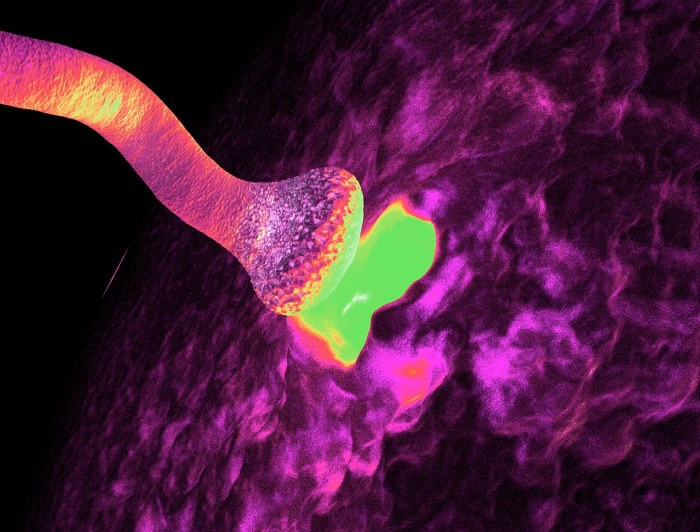

SMA HASTALIĞI NEDİR?
SMA, motor nöron hücrelerinin geri dönüşümsüz kaybı ve bunun sonucunda kas zayıflığı ve güçsüzlüğü ile karakterize genetik, ilerleyici bir hastalıktır. Tedavi edilmediği zaman omurilik ve kasların hareketini kontrol eden motor nöronların etkilenmesi sonucu kuvvet kaybı, beslenme ve solunum problemleri görülür.
Zamanla değişen derecelerde eklem hareket kısıtlılıkları omurgada şekil bozuklukları (skolyoz) da ortaya çıkar.
SMA hastalığı 1/40-60 oranında taşıyıcı oranına sahip bir hastalıktır. Ülkemizde SMA hastalığının görülme sıklığı ve taşıyıcılık oranları net olarak bilinmemekle birlikte, son yıllarda yaklaşık 1.200.000/yıl canlı doğum gerçekleştiği göz önünde bulundurulduğunda, yıllık yeni vaka sayısının 130-180 (ortalama: 150) arasında olduğu tahmin edilmektedir. Ülkemizde yaklaşık 3000 SMA hastası izlenmektedir (TC Sağlık Bakanlığı).
SMA tanısı öykü, belirtiler ve klinik bulgularla birlikte muayene bulguları ile konulur. SMA sinir sistemindeki motor nöronun hayatta kalması için gerekli olan ve SMN adı verilen bir motor nöron proteininin eksikliği neden olur. Bu eksiklik, SMN1 adı verilen bir genin 5.kromozomu üzerindeki genetik defektlerden kaynaklanır. Bu defektler arasında en sık olan SMN1 geninin hiç olmamasıdır. Komşu SMN2 geni bu genin görevini yapabilecek kadar benzerdir. SMA hastalığı çok nadir olarak SMN1 geni dışındaki genlerin mutasyonundan da kaynaklanabilir.
Kesin tanı ise SMN1 genetik analizinde mutasyonun tespiti ile konulmaktadır.
Taşıyıcılık oranının ülkemizde yüksek olması nedeni ile SMA taşıyıcılığı, ailesinde hasta bebek olan veya olmayan tüm çiftlere gebelik öncesi önerilmelidir. Çiftin taşıyıcı olduğu belirlendiğinde, sağlıklı çocuk için genetik danışmanlık, prenatal ve pre-implantasyon tanı testi seçenekleri sunulmaktadır.
Baba ve annenin hastalığı taşıması durumunda her gebelikte hastalığın ortaya çıkma ihtimali %25’dir. Taşıyıcı oldukları için sağlıklı bir şekilde yaşadıkları için genlerdeki bozukluk çocuklara geçerse SMA hastalığı ortaya çıkar.
Akraba evliliği hastalığın görülme sıklığını artırmaktadır.
Evlilik öncesi dönemde SMA açısından her ikisi de taşıyıcı çiftleri belirleyerek, ailelere genetik danışma vermek, SMA hastalığının uzun dönem morbidite ve mortalitesini azaltmak açısından oldukça önemlidir. Program 2021 yılı aralık sonu itibariyle 81 ilde uygulanmaya başlanmıştır.
SMA Taşıyıcı Taraması evlilik öncesi sağlık raporu almak için başvuran çiftler ve halen evli olan çiftlerden de talep edenler için yapılmaktadır.
Tüm bu çalışmaların sonucunda her iki eş adayının da SMA taşıyıcı olduğunun belirlenmesi durumunda, ailelere hastalık hakkında ayrıntılı bilgi ve genetik danışma verilmesi amaçlanmıştır. Genişletilmiş bu programın amacı, mevcut eş adaylarının ayrıntılı genetik danışmanlık hizmeti ve prenatal tanı olanakları hakkında bilgilendirilmeleri ve yönlendirilmelerini sağlamaktır.
Kimlere tarama testi uygulanır?
- Evlilik öncesi dönemde evlilik raporu almak için aile hekimlerine başvuranlara, halen evli olup bebek sahibi olmayı düşünen çiftlerden isteyenlere tarama testi uygulanır.
- Tarama için öncelikle erkek eş/eş adayından örnek alınır.
- Evlilik öncesi sağlık raporu için başvuranlara rapor düzenlenir.
- Erkek eşin/eş adayının tetkik sonuçlarında şüpheli pozitif bir sonuç yoksa takipten çıkarılır. Eğer erkek eş adayında şüpheli sonuç çıkarsa mutlaka kadın eş/eş adayına da tarama testi uygulanmalıdır.
- Evlilik Öncesi SMA Taşıyıcı Tarama Programı kapsamında doğurganlık çağını tamamlamış kadın adaylardan kan alınmasına gerek yoktur.
- Evlilik için başvuru yapan kişi daha önce evlenmiş ve Evlilik Öncesi SMA Taşıyıcı Tarama Programı kapsamında tetkik vermiş ise testin tekrarlanmasına gerek yoktur.
- Kişiler daha önce bir sebepten tarama yaptırmışsa testin tekrarlanmasına gerek yoktur.
- Özel durumlarda her iki eş adayına da tarama testi uygulanabilir.
- Tarama testleri için kan örnekleri, eşlerin/eş adaylarının kayıtlı oldukları Aile Hekimliği Birimlerinde (AHB) alınır.
- Alınan kan örnekleri İl Sağlık Müdürlüklerince belirlenen günlerde Genel Müdürlüğümüz bünyesinde kurulan tarama laboratuvarına gönderilir.
- Tarama sonuçları aile hekimlerine sistem üzerinden iletilir ve kişiler de sonuçlarını e-nabız üzerinden görebilir. (TC Sağlık Bakanlığı)
Belirtiler
Belirtiler hastalığın tipine göre değişmekle birlikte söyle sıralanabilir:
- Kaslarda zayıflık ve güçsüzlük
- Azalmış refleksler
- Beslenme güçlüğü
- Baş kontrolünü sağlayamama
- Ellerde titreme ,dilde seğirme
- Oturma ayakta durma ve yürüme de güçlük ve yürüme kaybı
- Bacaklardaki güç kaybı kollardaki güç kaybından daha belirgindir. SMA Hastalığı halk arasında gevşek bebek sendromu olarak da bilinir. SMA hastalığında görme ve işitme etkilenmez. Zeka düzeyleri normal veya normalin üzerindedir.
SMA Tipleri
İntrauterin dönemde başlangıç gösteren formdan (Tip 0 SMA), yenidoğan ve erken-bebeklik (Tip 1 SMA), çocukluk (Tip 2 ve Tip 3 SMA), adolesan ve erişkin (Tip 3 SMA) ve erişkin (Tip 4 SMA) dönemde başlangıç gösteren tipleri mevcuttur.
Başladığı yaş ve yapabileceği hareketler hastalığın tipini belirler. Belirtilerin başladığı yaş ne kadar ilerlemişse hastalık o kadar hafif seyirli olur.6 ay ve daha küçük bebeklerde görülen en ağır form olan tip 1 SMA dır. Tip 1 SMA hastalarının en önemli belirtileri baş kontrolünün olmaması ve solunum yolu enfeksiyonlarıdır. Bu enfeksiyonlar sonucu akciğer kapasiteleri azalır ve bir süre sonra solunum desteğine ihtiyaç duyarlar. Kol ve bacak hareketleri gözlenmez. Tip 1 SMA bebek ölümlerinin en sık sebebidir.
Tip 2 SMA 6-18 aylık bebeklerde görülür ve bu aylarda belirtiler başlar. Baş kontrolü vardır. Desteksiz oturabilirler ancak desteksiz ayakta duramaz ve yürüyemezler. Ellerde titreme, kilo alamama, güçsüzlük ve öksürük görülebilir. Tip-2 SMA hastaları sık solunum yolu enfeksiyonu geçirirler. Skolyoz oluşur.
Tip -3 SMA hastalarında hastalık belirtileri 18. aydan sonra başlar. Bu döneme kadar gelişimleri normal olan çocuklarda semptomlar ergenlik dönemine kadar fark edilebilir. Gelişimleri yavaştır. Hastalık ilerledikçe ve kas güçsüzlükleri artıkça ayağa kalkmakta zorlanırlar, merdiven çıkamama, sık düşme, ani kramplar, koşamama gibi belirtiler görülür. Daha ileriki zamanlarda yürüme becerisini kaybedip yatağa bağımlı hale gelebilirler. Skolyoz görülür.
Tip 4 SMA hastalığı yetişkinlerde ve daha nadir olarak görülür. Yavaş seyirlidir. Kol ve bacaklarda güçsüzlük görülür. Zamanla titreme ve seğirme eşlik eder.
Tedavi
Kesin bir tedavisi bulunmamaktadır. Tip 1 ve tip 2 SMA genellikle solunum yolu enfeksiyonu nedeni ile yaşamlarını kaybederler.
Aralık 2016 tarihinde FDA onayı alan nusinersen, bebek ve çocukların tedavisinde uygulanmaktadır. Ülkemizde de Temmuz 2017'de Sağlık Bakanlığı tarafından onay almıştır.